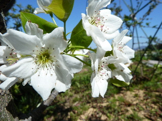
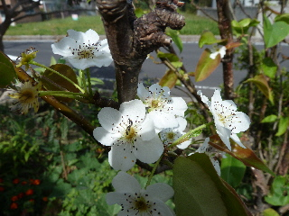
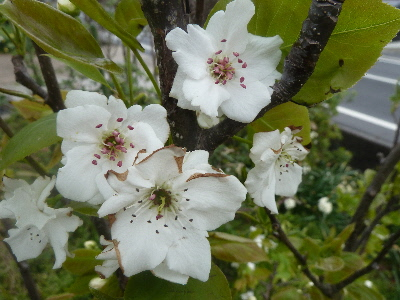
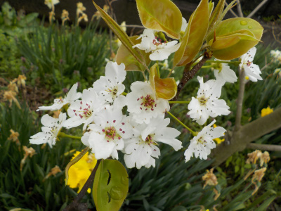
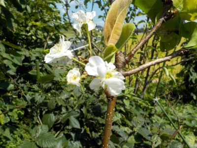
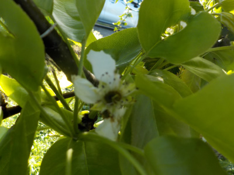
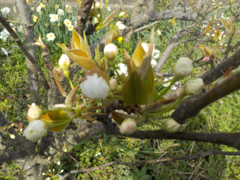
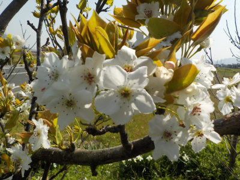
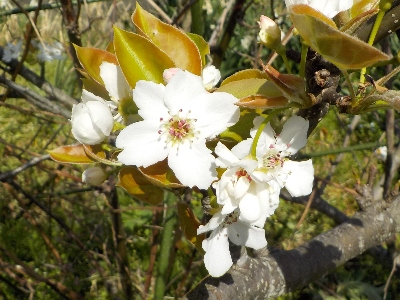

梨の花は１本じゃ駄目なんですよね。
更新日 : 2015/04/11

梨の花が咲いたんですけど、花が咲いている木が1本しかないです。
2本ないと受粉出来ないので、実は出来ません。花だけ楽しみます。
更新日 : 2015/04/11

梨の花が咲いたんですけど、花が咲いている木が1本しかないです。
2本ないと受粉出来ないので、実は出来ません。花だけ楽しみます。
更新日 : 2015/10/10

秋に花が沢山咲いてしまった。
来年の春は花が少ないのかな？
更新日 : 2018/04/07

花が咲いたので受粉です。
2種類の木が1本ずつあるんですが、片方だけ沢山咲いてます。バランスが悪いなー。早くもう1本も咲いて欲しいです。
更新日 : 2021/03/28

今年は2品種同時に咲いたので受粉がとってもしやすい。
沢山実が出来そうです。楽しみです。
更新日 : 2021/08/29

梨は毎年狂い咲きしている気がする。
こんなもんなんだろうな。
更新日 : 2022/04/16

今年は梨の花が1本しか咲かず、受粉作業が出来ませんでした。
梨の花は時間が経ったため、もうボロボロです。
更新日 : 2023/03/25

今年は品種違いの2本が同時に咲きそうなので、受粉が出来そうです。
更新日 : 2023/04/01

2品種同時に咲いたので、受粉作業をしました。
今年は梨が食べれそう。たぶん。
更新日 : 2024/04/07

2種類の梨の花が咲いていたので受粉しました。
また数日後にもしようと思います。
梨の受粉って本当に必要なのかな？虫で十分じゃないかな。